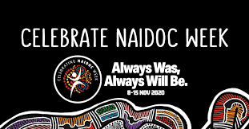
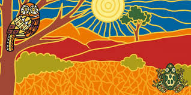
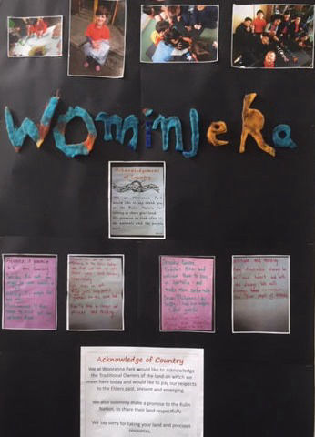

While the website for the Janusz Korczak Association was still a work in progress during NAIDOC Week and not yet live, it was on our minds to honour and recognise the First Nations people and bring this special time to notice.
Watch this video about the Koorie group at WPPS:
here
The NAIDOC 2020 theme - Always Was, Always Will Be. - recognises that First Nations people have occupied and cared for this continent for over 65,000 years.
There is so much to celebrate! Communities across Australia are celebrating NAIDOC week - in Early Learning Centres, Schools, Communities,Towns, Businesses, Organisations and more.
NAIDOC Week is celebrated in Australia to honour and recognise the First Nations people. Just like different special dates in our calendars, what we celebrate is not only important on those dates. Mothers’ Day is especially celebrated on a day in the calendar. A day when mothers are told how much they are loved and appreciated and are given gifts and families get together for a meal or outing to celebrate their mothers. While all families are different, nearly every day mothers do things to help their families. Think about the ways your mother has helped you. There are so many different ways. It’s not only Mothers’ Day we appreciate our mothers and remember something she told us that was important, or explained what happened when things seem to go wrong, or simply smiled when we came in the door. Mothers are always important to us, even though some days mothers can be in a bad mood too. Just like all people life isn’t always good for mothers, but that doesn’t make them less important to us. The same goes for Fathers’ Day and other special events. Something worth celebrating is valued not only on those special days

While NAIDOC Week is an important time in our calendars, we don’t need to wait for NAIDOC Week to celebrate Aboriginal and Torres Strait Islander peoples. There is so much to learn from them and celebrate them and/or with them any or every day. If you haven’t celebrated NAIDOC First Nations people during NAIDOC week, tomorrow, next week and or any other time you can celebrate them.
When thinking more about the NAIDOC 2020 theme - Always Was, Always Will Be recognising that First Nations people have occupied and cared for this continent for over 65,000 years, I also realise that today in our rapidly changing world people are often moving from one thing to the next. It’s wonderful that there are new advances in many things that help people, but if we keep wanting to know about the latest things, do we ever wonder about what is left behind? Imagine if Mum said you can do the food shopping today, just don’t buy more than fits in my basket and make sure it’s not too heavy to carry home. Excitedly you go off to do the shopping and choose things quickly. The basket gets so full when you add more, some things fall out. What is in the basket? What do you like best? Going shopping is helping your mother. Have you put in the basket things she often tells you we need?

Does this happen in other ways too? Is the world moving too quickly that we are not thinking enough about the consequences of many of the changes.We don’t want the history, traditions and culture of First Nation’s people to get lost just because we learn new things. For all of us our culture, traditions and history have shaped our identity, who we are and what is important to us. Learning more about each other develops deeper understanding and respect for one another and brings new friendship knowledge and often joy too.
The traditional land of Aboriginal and Torres Strait Island people, connection to country and richness of their culture and history always was and always will be important and valued by people living in Australia. Do we know much about the country on which we live? If you are not a First Nations person and don’t know any yet, it would be so good to meet some soon and share your own stories with each other. First Nation’s people, please don’t hesitate in sharing your stories with new people you meet. We all have so much to share and learn from each other.

“For the sake of tomorrow, we ignore whatever makes the child happy, sad, surprised, angry or interested today. For the sake of that tomorrow which it does not understand, nor does it feel any need to understand. We steal many years of its life. […] The child thinks: I am nothing. Only adults are something. Now I am such a little older nothing. How many years am I supposed to wait? This quotation from Korczak shows children’s rights as an integral part of the past, the present and the future; it points to the historical struggle for the recognition of the little person’s presence in culture, religion, society and the state. "A child is not a human being in the making; it is an important member of the family, society and the global community. It has the right to be considered as a person, a citizen, a partner, an important and serious human being.” (Marek Michalak)
Through children and what we do now is a way of answering Aunty (Rev) Janet Turpie-Johnston’s question. What Always Was and Always Will Be can always be here, with respect for the land, the culture and traditions of First Nations people, together all of us valuing and respecting each other as who we are and as equals.